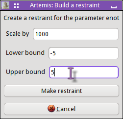

The GDS window
This is the big trick in ARTEMIS:
The parameters of the EXAFS equation are not the parameters of the
fit. The parameters of the EXAFS equation are written in terms
of the parameters of the fit.
As
a consequence, path parameter values are
math
expressions. These math expressions are functions of the actual
fitting parameters.
Some of these math expressions are quite simple. For example, in the
gold metal example in
the previous chapter,
the math expressions for
S²₀ and E₀ were simple function of a single parameter. The
math expression for ΔR, however, was a function of
alpha and reff,
while the σ² math expression used the
debye function and two parameters.
All of these parameters must be defined in the GDS window. This
window contains a grid with a series of buttons down the right side.
It is displayed and hidden using the GDS button on the left side of
the Main window. Here are the contents of the GDS window from the
gold metal example. The four variable parameters in the fit along
with the fixed sample temperature needed by the
debye function are shown. A new variable
parameter is being defined in line 6.
The second, third, and fourth columns in the grid are filled by simple
text boxes. The first column contains a drop down menu from which the
parameter types can be chosen.
Parameter types
Every parameter of any type used in any math expression must be
defined on the GDS widow. Any variable parameter defined on the GDS
window must be used in a math expression.
There are 9 types of parameters in ARTEMIS. They are color coded
in the grid to give you a visual indication of each parameter's
type.
-
guess
-
(purple) This is a
parameter of the fit. Its value will be adjusted
to find the best fit of the model to your data.
-
def
-
(green) This is a
parameter that is defined as a math expression
dependent upon other guess, def, or set parameters. Its value is
updated throughout the fit. As discussed elsewhere in this manual,
sophisticated use of def parameters is key to successful model
building and effective use of ARTEMIS.
-
set
-
(black) A set parameter
is one that is evaluated at the beginning of
the fit, but not evaluated subsequently. Although a set parameter can
take a math expression as its value, it is more typically used to
represent a constant value used elsewhere in the fitting model.
-
lguess
-
(dark purple) An lguess
parameter is a tool used to simplify model
creation for a multiple data set fit. It can be used in math
expressions for two or more data sets. When the fit started, an
actual guess parameter will be created for each data set in which the
lguess is used. As an example, suppose your multiple data set fit
includes data on a series of binary alloys. If x is a mixing parameter between the two alloys and is different
for each sample, you might then use math expressions containing x and (1-x) for
S²₀ parameters of paths representing the two metallic species in
each fit. With x an lguess parameter,
independent mixing parameters will be floated for each data set. The
point, then, of an lguess is to facilitate the chore of editing path
parameter math expressions using ARTEMIS' tools for pushing
path parameter values across paths. This is discussed in more detail
in the discussion of the characteristic value.
-
skip
-
(gray) A skip parameter
is one that is not used in any capacity in the
fit, but which you do not want to discard from your fitting project.
-
restrain
-
(dark yellow) A restraint
is a math expression that is evaluated and
added in quadrature to χ² to evaluate the fit. That is, the
fit is optimized in the presence of the restraint. The point of this
is to add prior knowledge to a fit. Restraints will be discussed in
more detail later in this document.
-
after
-
(blue) An after parameter
is very similar to a def parameter in that
it takes a math expression that depends on other parameters. It is
not, however, used in any way in the fit. Instead, it is evaluated at
the end of the fit and reported to the log file. This is used to make
interesting calculations based on other parameters as part of the
record of the fit.
-
penalty
-
(brown) This takes a math
expression representing a user defined
penalty to the happiness calculation. This feature has not yet been
implemented in ARTEMIS.
-
merge
-
(white on red) A merge parameter is a parameter which has been
multiply defined under the same name as part of combining fitting
projects or importing structural units. A fit cannot proceed with any
parameters in this state. This feature has not yet been implemented
in ARTEMIS.
 Penalty and merge parameters have not been implemented.
Penalty and merge parameters have not been implemented.
User interaction
Explain drag and drop
Button bar
The stack of buttons on the right side of the GDS window contains many
of the main functions of the GDS window.
-
Use best fit
-
This button makes the most recent best fit value into the initial
guess for every guess parameter in the grid.
-
Reset all
-
This button tellsIFEFFIT to reset all parameters to their initial
values.
-
Highlight
-
This button prompts you for a string. All parameters with names or
math expressions matching the string provided will be highlighted with
a yellow background. This feature is particularly useful in large
fitting models with many parameters. In the image above, you can see
that all parameters matching “brc1” have
been highlighted. The string to match can actually be any valid Perl
regular expression.
-
Evaluate
-
Clicking this button will evaluate all parameters and insert their
evaluations into the fourth column of the grid. This is used to
“spell-check” your math expressions for
def and other parameters. In the image above, this button has
been clicked and the evaluations have been inserted into the fourth
column.
-
Import/export
-
The next two buttons are used to import or export a simple text file
with the names and definitions of all the parameters.
-
Discard all
-
This button does just that, after prompting to be sure that is what
you want to do.
-
Add a site
-
This button appends a blank row to the end of the grid.
Keyboard shortcuts
When one or more rows are selected, you can use the following keyboard
shortcuts to change the parameter type of that set of parameters.
Context menu
 Clicking on a line in the grid selects the entire line. Control
clicking of a line adds that line to the selection. Shift clicking
adds all lines between the selected and clicked upon lines.
Clicking on a line in the grid selects the entire line. Control
clicking of a line adds that line to the selection. Shift clicking
adds all lines between the selected and clicked upon lines.
Right clicking on any line in the grid, including the label containing
the line number, will post the menu shown on the right.
-
Copy, cut, paste
-
These three options copy, cut, and paste lines from or to the GDS
grid. The cut function is one way of discarding a parameter.
Another is to simply delete the name in the second column.
-
Insert blank lines
-
The insertion options complement the “Add a site”
button by adding blank rows to the middle of the grid.
-
Change parameter type of selected lines
-
This sub-menu provides yet
another way of changing the parameter type of the selected lines of
the grid. If you have more than one line selected, they will all get
changed to the option you choose from the submenu.
-
Grab best fit
-
This changes theinitial guess of the selected lines to the most
recent best fit value(s).
-
Build restraint
-
|

This posts a dialog
that helps you name and define a restraint based upon the value of the
parameter in the line clicked upon. This will use IFEFFIT's
penalty function with the lower and upper
bounds as its arguments and multiplied by the scaling factor. The
example shown will make this restraint:
restrain res_enot = 1000 * penalty(enot, -5, 5)
and add it to the end of the grid.
The penalty function will evaluate to 0 when enot stays between -5 and
5. As the value of enot strays outside that range, the restraint will
evaluate to a value of 100 times the distance outside the range.
This, then, is added in quadrature to χ² when the fit is minimized.
You can read more about this,
including how to choose the value of the scaling parameter, in the
discussion of restraints.
Annotate
This prompts you for a text string to describe the parameter in the
line clicked upon. The intent is to allow you document the role of
the parameter in your fitting model. This annotation is displayed in
the GDS window's status bar when that line is selected.
Find parameter
This posts a small window with a text box reporting all GDS parameters
and path parameters which have math expressions containing this parameter.
Rename parameter globally
This allows you to rename a parameter and have its new name inserted
every place in the fit where that parameter is used. All instances in
other parameters on the GDS page and in the math expressions for
parameters of all paths will be changed. Essentially, this is a
global search and replace.
Explain
Finally, the items in this submenu write a short text to the status
bar explaining the various parameter types.
|